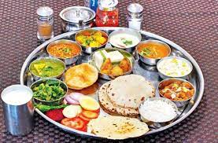

Loading...
Food Menu
Food Menu
Most Popular Items

Batata Pauva 40₹
Batata Pauva is a popular Gujarati snack made from flattened rice (poha) and potatoes. The dish is known for its delightful blend of flavors and textures. Fluffy poha is sautéed with aromatic spices, crispy peanuts, and tender potato cubes, creating a harmonious balance between softness and crunchiness. The dish is often garnished with fresh coriander leaves and served with a drizzle of tangy lemon juice. Whether enjoyed as a tea-time snack or a light breakfast, Batata Pauva captures the essence of Gujarati cuisine in every bite.Dhokla Delight 120₹
Dhokla Delight is a beloved Gujarati dish that embodies the essence of lightness and flavor. These fluffy steamed cakes are made from fermented chickpea flour, resulting in a spongy texture that practically melts in your mouth. Served with a side of tangy chutney and topped with tempered mustard seeds, the dish offers a delightful combination of sweet, sour, and savory flavors. The vibrant yellow color of the dhoklas reflects the sunny disposition of Gujarat, making it not only a treat for the taste buds but also a feast for the eyes. Dhokla Delight is a quintessential part of Gujarati cuisine, perfect for a quick snack or as part of a hearty meal.
Khandvi 150₹
Khandvi is a delicate and delectable Gujarati snack that showcases the artistry of the cuisine. Thin rolls of gram flour and yogurt batter are steamed and then gently seasoned with a mustard seed and curry leaf tempering. Once rolled, the gram flour strips are adorned with grated coconut and fresh cilantro, adding a burst of freshness and texture. The dish is a delightful balance of subtle flavors and a satisfyingly smooth mouthfeel. Khandvi's intricate preparation and captivating taste make it a must-try for those seeking a taste of authentic Gujarati culinary craftsmanship.
Fafda-Jalebi Combo 180₹
The Fafda-Jalebi Combo offers a delightful contrast of textures and flavors that is a quintessential part of Gujarati snacking. Crispy and mildly spiced fafdas, made from chickpea flour, are paired with golden, syrup-drenched jalebis that are sweet and tangy. The combination is a perfect marriage of sweet and savory, creating a unique harmony that Gujarati cuisine is known for. Whether enjoyed as a hearty breakfast or a teatime treat, the Fafda-Jalebi Combo captures the essence of Gujarat's culinary diversity and creativity in every bite.

Gujarati Fixed Thali 170₹
Enjoy a traditional Gujarati meal with a fixed selection of delicacies, including roti, subji, rice, dal, and more.Gujarati Unlimited Thali 200₹
Indulge in the flavors of Gujarat with an unlimited selection of mouthwatering dishes, served thali-style.
Punjabi Fixed Thali 200₹
Savor the flavors of Punjab with a fixed assortment of Punjabi specialties, including roti, subji, rice, and more.
Punjabi Unlimited Thali 350₹
Immerse yourself in the richness of Punjabi cuisine with an unlimited spread of delectable dishes, served thali-style.Kadhi Khichadi 150₹
A hearty Gujarati dish featuring spiced yogurt-based curry served with fluffy khichdi. Kadhi is a tangy and flavorful curry made with yogurt and gram flour, and it pairs perfectly with the comforting khichdi.Kanthiya Vaadi Thaali 180₹
Indulge in the unique flavors of Saurashtra with a variety of dishes centered around the traditional Kanthi Vaadi. This thaali includes a delightful combination of vaadi, a sun-dried lentil dumpling, and other regional specialties that showcase the rich culinary heritage of Saurashtra.
Daal Baati 190₹
A Rajasthani specialty consisting of lentil curry and baked wheat dough baatis, served with ghee and chutney. The crispy baatis are perfect for dipping into the flavorful daal, creating a harmonious blend of textures and tastes.